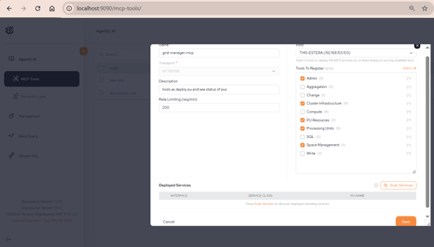
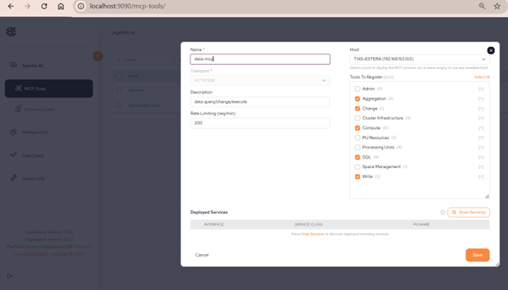
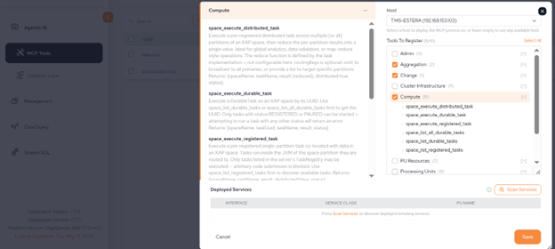

The XAP MCP Server provides a comprehensive set of tools for interacting with GigaSpaces XAP clusters through the Model Context Protocol (MCP). These tools are organized into three main categories based on their functionality, plus a foundational
These features are IN PREVIEW mode, customers are welcome to experience them in a lower environment and send feedback. Please contact us if you want to cooperate on using XAP execution or data in agentic workflow, Or if your use case requires exposure of additional tools and capabilities.
Access is controlled by the service account. In a secured environment the security service will be used to generate a token based on the role’s permissions This token will be added to the MCP configuration.
For each MCP service, this defines the number of operations allowed per minute, preventing an agent doing too many operations and attacking the grid environment.



After MCP service is deployed, copy or download the configuration file. When working in a secured environment, paste the token as well.
Place this configuration file on your agent settings. For example, in claude code it will be .mcp.json file.
Manage cluster topology, deploy and monitor Processing Units (PUs), control spaces, and access cluster infrastructure including containers (GSCs), managers, and hosts. These tools handle the operational aspects of running an XAP grid.
|
Tool |
Description |
|---|---|
|
cluster_get_topology |
Retrieve complete runtime topology of managers, GSA agents, and GSC containers |
|
space_get_topology |
Get partition topology showing instance IDs, primary/backup roles, and host info |
|
space_get_health |
Return health status (HEALTHY/DEGRADED/UNREACHABLE) and running instance count |
|
space_get_metrics |
Fetch operation statistics (reads, writes, takes) and throughput metrics |
|
space_list |
List all deployed spaces with metadata and status |
|
space_create |
Deploy a new Space with configurable partitions, backups, and env variables |
|
Tool |
Description |
|---|---|
| pu_list |
List all deployed Processing Units with their status |
|
pu_deploy |
Deploy a Processing Unit from an uploaded JAR with topology and SLA config |
|
pu_get |
Get detailed status and metrics for a specific Processing Unit |
|
pu_undeploy |
Remove a deployed Processing Unit |
| pu_quiesce |
Gracefully quiesce a Processing Unit (stop accepting new requests) |
|
pu_unquiesce |
Resume a quiesced Processing Unit |
|
Tool |
Description |
|---|---|
| cluster_get_info | Get cluster version, build info, and basic configuration |
|
hosts_list |
List all physical/virtual hosts with identifiers and resource info |
|
host_get |
Get detailed information for a specific host |
|
managers_list |
List all XAP managers with status, roles, and host assignments |
| manager_restart |
Restart a manager instance (requires confirmation) |
|
manager_get_dump_url |
Get download URL for manager diagnostic services dump |
Possible use is combining those tools with MCP of the metrics framework to troubleshoot grid issues and understand resource utilization.
Execute data operations on XAP spaces including querying, reading, writing, updating, and deleting entries. Supports complex queries with filters, aggregations, SQL with JOINs, and surgical in-place mutations for efficient data manipulation.
|
Tool |
Description |
|---|---|
| space_query | Fetch entries of a single type with optional SQL WHERE filter (max 500 rows) |
|
space_sql |
Execute complete SQL with SELECT, FROM, WHERE, GROUP BY, ORDER BY, LIMIT. Supports JOINs |
| space_count |
Count entries matching an optional filter |
|
space_read_by_id |
Read a single entry by its ID |
| space_aggregate |
Run collocated aggregations (count, sum, average, max, min) on large datasets |
|
Tool |
Description |
|---|---|
| space_write | Create/write/update a single entry with optional lease configuration |
|
space_write_batch |
Write/update multiple entries in one round-trip (max 100 entries) |
| space_take |
Read and remove an entry atomically |
|
space_take_by_id |
Read and remove a single entry by ID atomically |
| space_take_batch |
Remove multiple entries matching a WHERE clause |
|
Tool |
Description |
|---|---|
| space_change | Apply in-place mutations to entries (set, unset, increment, addToCollection, putInMap, etc.) |
set — Update a field to a new value
unset — Remove a field from an entry
increment — Increase a numeric field by a value
addToCollection — Add an element to a collection field
removeFromCollection — Remove an element from a collection field
putInMap — Add/update a key-value pair in a map field
removeFromMap — Remove a key from a map field
Possible use cases: Chat with the data, run agentic flows that consume some aggregations from the space, write or change space data as result of other processes outside the XAP framework.
Execute custom business logic and distributed tasks co-located with data on XAP partitions. Enable push-computation (bring code to data) for efficient processing of large datasets without data movement.
|
Tool |
Description |
|---|---|
| space_execute_registered_task | Execute a pre-registered single-partition task co-located with data |
|
space_execute_distributed_task |
Execute a task on all partitions and aggregate results |
| space_list_registered_tasks |
Discover available pre-registered tasks in a space |
|
Tool |
Description |
|---|---|
| space_execute_remote_service | Execute a pre-registered remote service method on a partition |
|
Tool |
Description |
|---|---|
| space_get_durable_tasks | Retrieve scheduled/executing durable tasks with status |
|
space_get_task_result |
Get the result of a previously executed task by ID |
Push-Computation: Execute code where the data lives, eliminating network overhead
Distributed Processing: Run tasks on all partitions for parallel computation
Durable Execution: Tasks persist across failures and recoveries
Pre-Registered: Only whitelisted tasks from TaskRegistry can execute (security)
Use the XAP colocation abilities and push executions to data process. Use either predefined logic or dynamically define new logic that can be run on the grid. Instead of bringing data and analyze it by the LLM, save time and tokens by sending only code instructions to XAP, and get deterministic final answer back as part of agentic workflow.
All tools support comprehensive logging and audit trails
Query operations are safe-guarded with result truncation (max 500 rows by default)
Write operations require explicit access permissions
Admin operations require confirmation flag (confirm=true)
Tasks execute asynchronously — use request IDs for tracking
The semantic layer is automatically maintained and indexed for optimal performance